I am grateful to tattooing as it has always given me a chance to connect with people in a way that feels reserved for more intimate relationships.
It; tattooing; is about change and ownership over one's body.
Here below you can find some drawings I got to turn into body art.
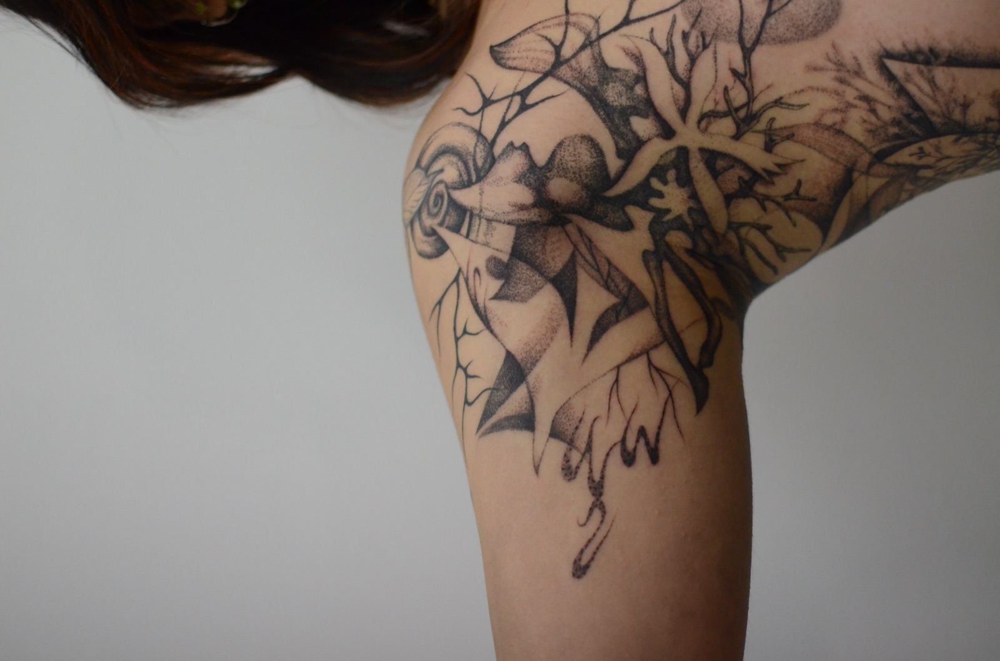
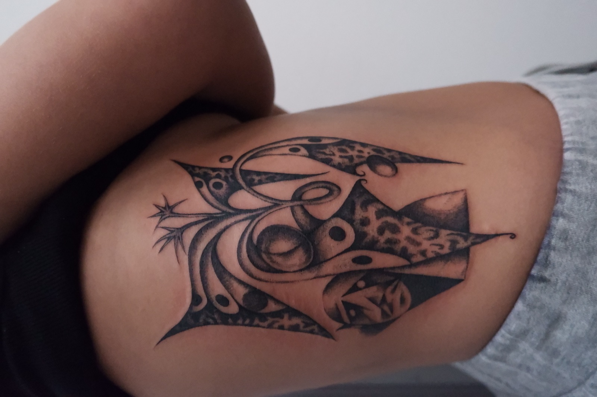
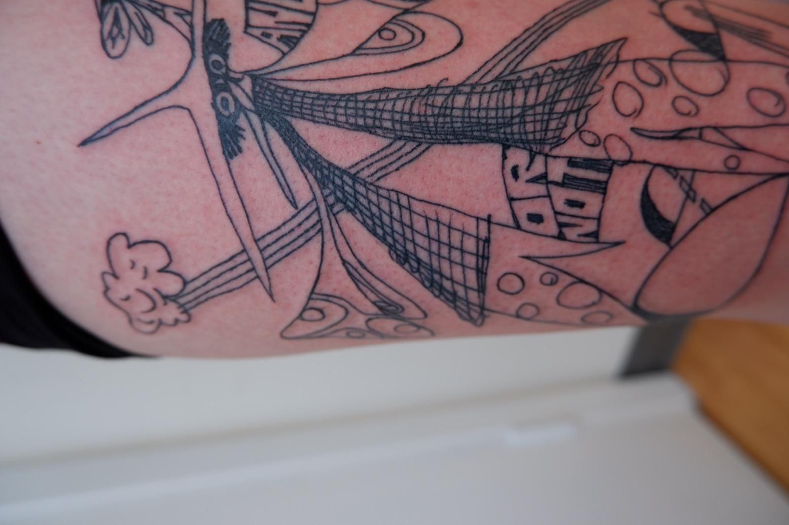
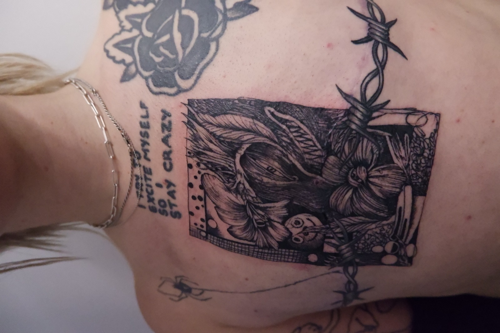
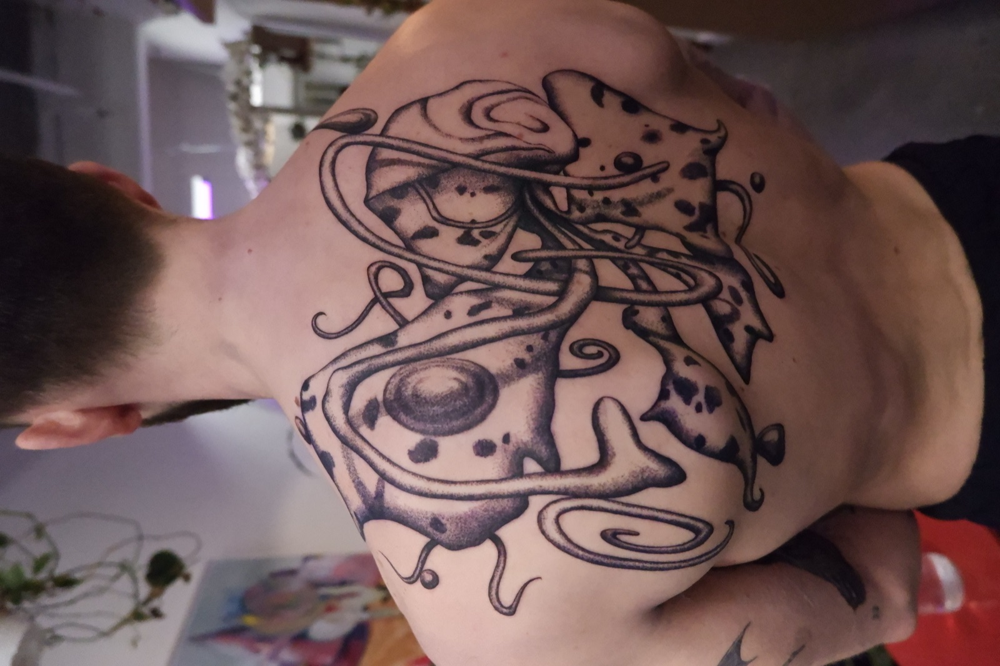
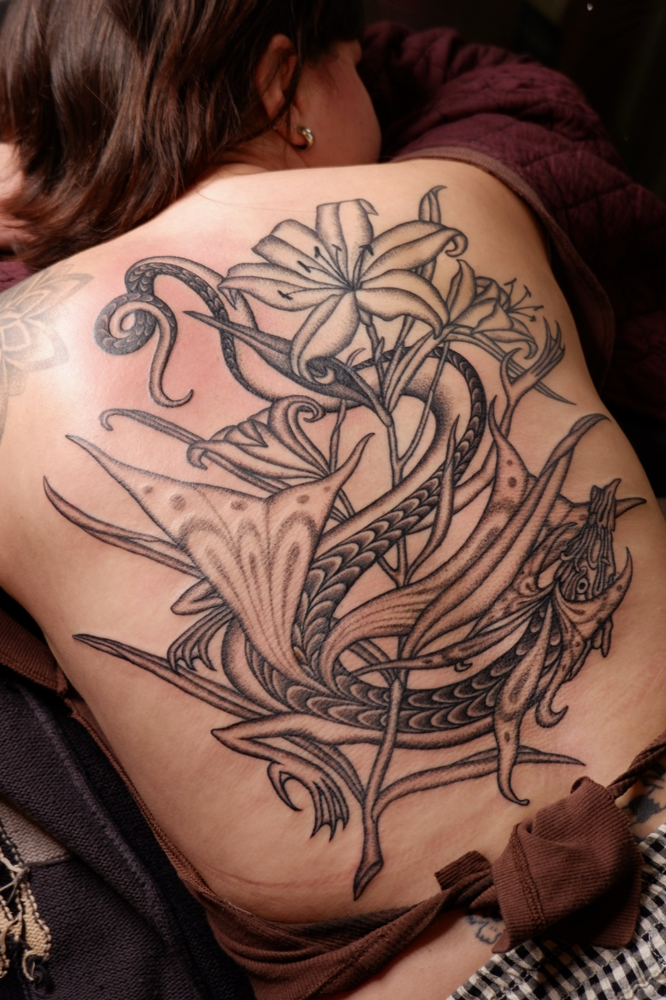
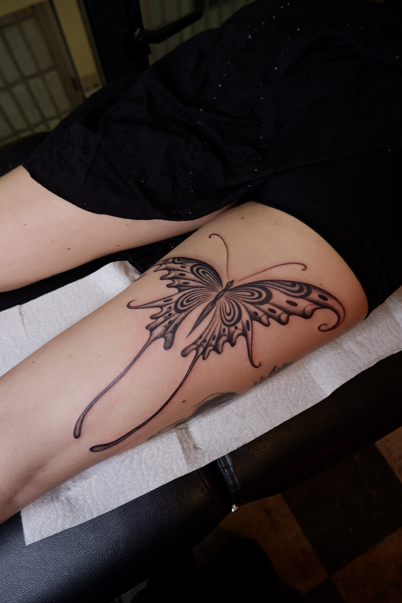
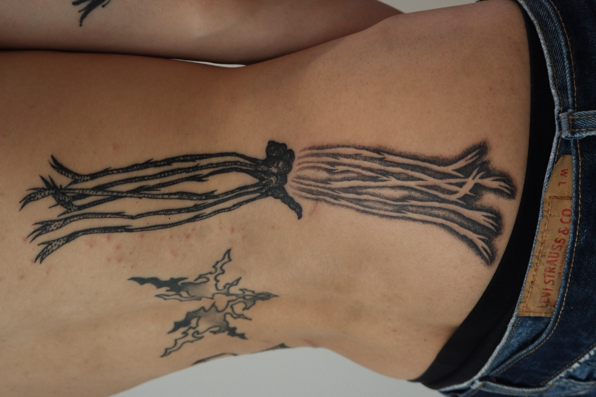
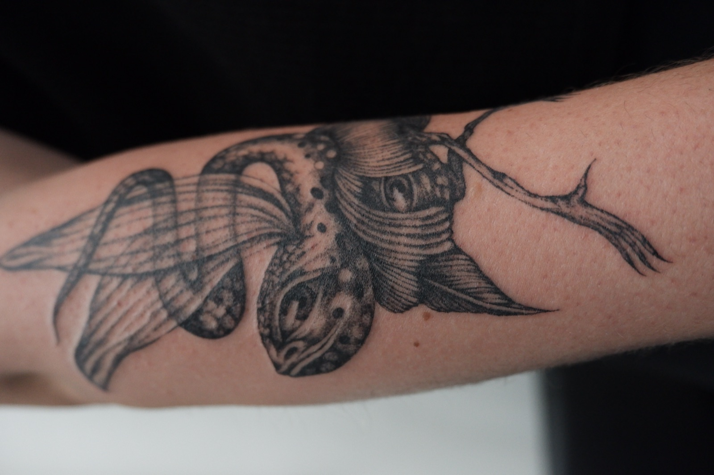
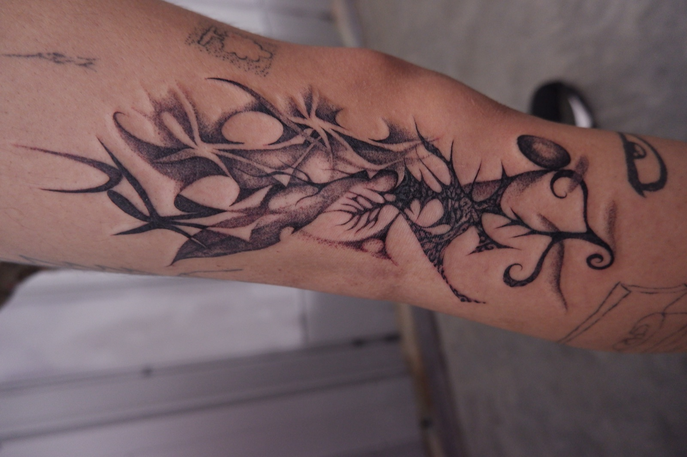
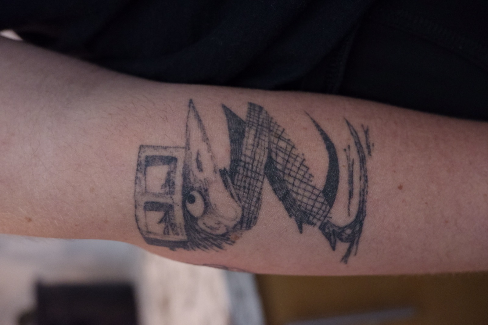
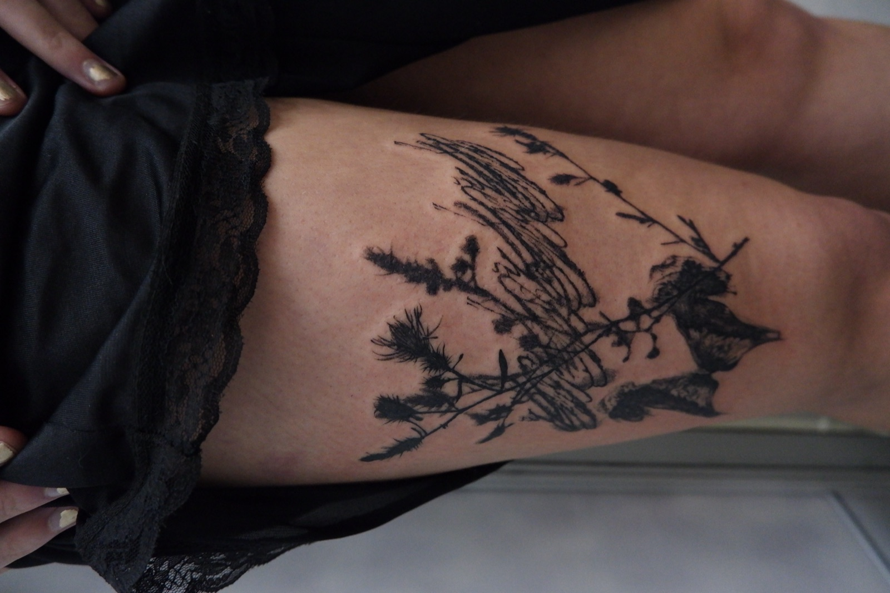
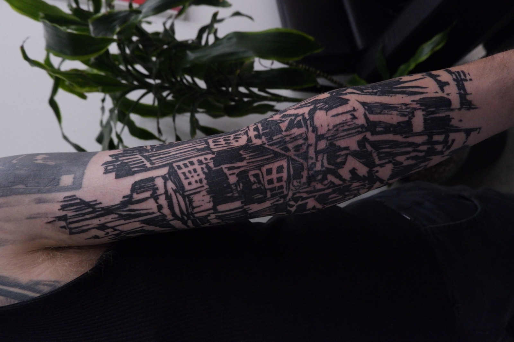
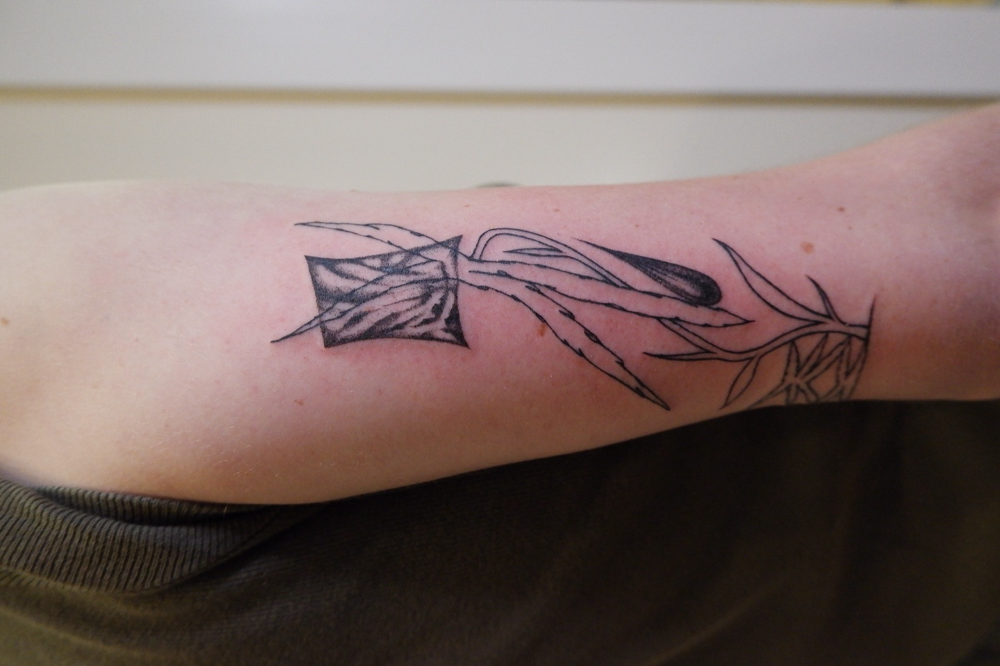